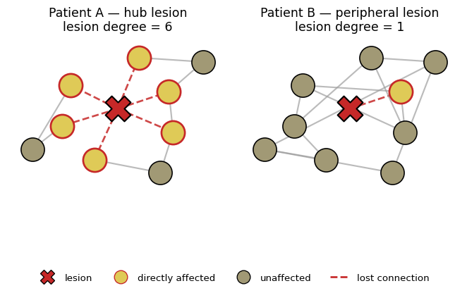
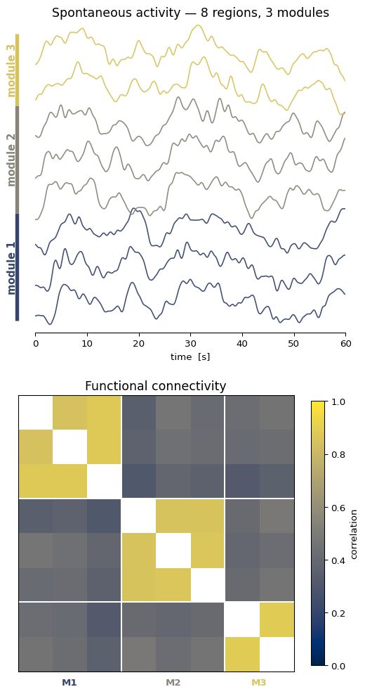
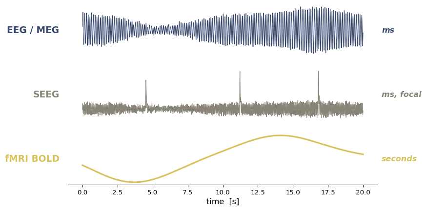
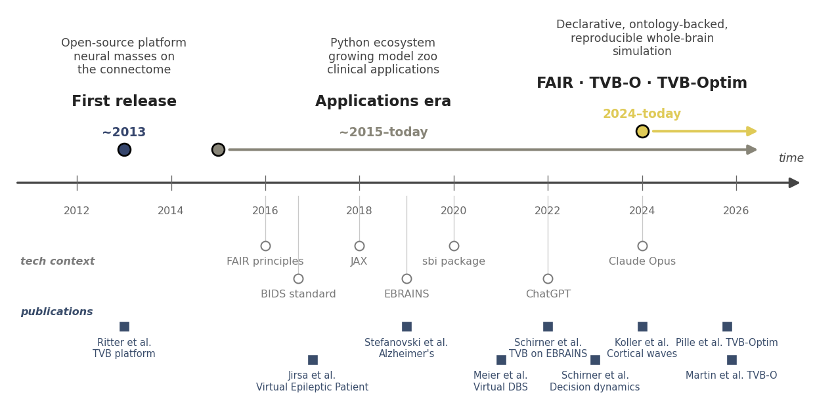

import os
import numpy as np
import matplotlib.pyplot as plt
FIG_DIR = "../img/section-1"
DPI = 200
os.makedirs(FIG_DIR, exist_ok=True)
def savefig(name, **kw):
path = os.path.join(FIG_DIR, name)
plt.savefig(path, dpi=DPI, bbox_inches="tight", **kw)
print(f"saved → {path}")Intro figures — visuals for §1
Schematic figures for the five-slide opener (_slides-section-1-intro.qmd)
This notebook generates the schematic figures embedded in _slides-section-1-intro.qmd. Every figure here is purely illustrative (no real connectome / data) — the intro slides are about communicating ideas, not showing results. Re-run the notebook whenever the §1 figures need to change.
Each figure is saved to img/section-1/ and referenced from the slides by path.
1 Setup
2 Slide 1 — same lesion, different network position
Two abstract networks, same lesion node in the same physical position. On the left it sits at a hub (degree 6); on the right it’s peripheral (degree 1). The shared layout is the whole point: the only thing that changes between panels is the surrounding connectivity, and that alone flips the downstream impact from “widespread” to “barely anything.”
Direct neighbours of the lesion are highlighted as the deficit territory — the regions that lose their input when the lesion is taken out.
import networkx as nx
from matplotlib.lines import Line2D
cividis = plt.get_cmap("cividis")
c_node = cividis(0.65)
c_affected = cividis(0.88)
c_lesion = "#c62828"
c_edge = "#9e9e9e"
c_edge_cut = "#c62828"
# Shared node positions — identical between the two panels by design.
positions = {
0: ( 0.00, 0.00), # the lesioned node (same in both panels)
1: ( 1.20, 0.40),
2: ( 1.30, -0.55),
3: (-1.10, 0.55),
4: (-1.30, -0.40),
5: ( 0.50, 1.20),
6: (-0.55, -1.20),
7: ( 2.00, 1.10),
8: (-2.00, -0.95),
9: ( 1.00, -1.50),
}
def make_hub():
"""Patient A: lesion node 0 sits at a hub (degree 6)."""
G = nx.Graph()
G.add_nodes_from(range(10))
G.add_edges_from([
(0, 1), (0, 2), (0, 3), (0, 4), (0, 5), (0, 6),
(1, 7), (2, 9), (3, 8), (4, 8), (5, 7), (6, 9),
(1, 2),
])
return G
def make_periphery():
"""Patient B: lesion node 0 sits at the periphery (degree 1)."""
G = nx.Graph()
G.add_nodes_from(range(10))
G.add_edges_from([
(0, 1),
(1, 2), (1, 3), (2, 3), (2, 5), (3, 4),
(4, 5), (4, 6), (5, 7), (6, 8), (7, 8),
(7, 9), (8, 9),
])
return G
def draw_panel(ax, G, title, lesion=0):
affected = set(G.neighbors(lesion))
for (u, v) in G.edges():
cut = (u == lesion or v == lesion)
x = [positions[u][0], positions[v][0]]
y = [positions[u][1], positions[v][1]]
ax.plot(
x, y,
color=c_edge_cut if cut else c_edge,
linestyle="--" if cut else "-",
linewidth=2.0 if cut else 1.6,
alpha=0.85 if cut else 0.7,
zorder=1,
)
for n, (x, y) in positions.items():
if n == lesion:
continue
in_deficit = n in affected
ax.scatter(
[x], [y],
s=620,
color=c_affected if in_deficit else c_node,
edgecolors=c_lesion if in_deficit else "black",
linewidths=2.0 if in_deficit else 1.2,
zorder=3,
)
lx, ly = positions[lesion]
ax.scatter([lx], [ly], s=720, marker="X",
color=c_lesion, edgecolors="black", linewidths=1.6, zorder=4)
deg = G.degree(lesion)
ax.set_title(f"{title}\nlesion degree = {deg}", fontsize=13)
ax.set_xlim(-2.6, 2.6)
ax.set_ylim(-2.0, 1.7)
ax.set_aspect("equal")
ax.axis("off")fig, axes = plt.subplots(1, 2, figsize=(7.0, 5.0))
draw_panel(axes[0], make_hub(), "Patient A — hub lesion")
draw_panel(axes[1], make_periphery(), "Patient B — peripheral lesion")
handles = [
Line2D([0], [0], marker="X", color="w", markerfacecolor=c_lesion,
markeredgecolor="black", markersize=15, label="lesion"),
Line2D([0], [0], marker="o", color="w", markerfacecolor=c_affected,
markeredgecolor=c_lesion, markersize=14, label="directly affected"),
Line2D([0], [0], marker="o", color="w", markerfacecolor=c_node,
markeredgecolor="black", markersize=14, label="unaffected"),
Line2D([0], [0], color=c_edge_cut, linestyle="--", linewidth=2.0,
label="lost connection"),
]
fig.legend(handles=handles, loc="lower center", ncol=4, frameon=False,
bbox_to_anchor=(0.5, -0.02))
plt.tight_layout()
savefig("lesion_network.png")
plt.show()saved → ../img/section-1/lesion_network.png
3 Slide 2 — resting-state activity is structured, not noise
Two-panel schematic. Left: stacked region traces over ~60 s of synthetic resting activity. Eight regions, grouped into three modules; within a module the traces wiggle in sync (driven by a shared slow latent), between modules they are decoupled. Right: the functional connectivity matrix derived from the same series — three blocks emerge along the diagonal.
Both panels are pure schematics. No real data, no model — the point is to picture the slide’s claim that ongoing activity already carries structure.
from scipy.ndimage import gaussian_filter1d
rng = np.random.default_rng(7)
# --- module assignment ----------------------------------------------------
modules = [
("module 1", [0, 1, 2]),
("module 2", [3, 4, 5]),
("module 3", [6, 7]),
]
n_regions = sum(len(idx) for _, idx in modules)
region_to_module = {r: m for m, (_, idx) in enumerate(modules) for r in idx}
cividis = plt.get_cmap("cividis")
module_colors = [cividis(0.20), cividis(0.55), cividis(0.85)]
# --- synthetic resting-state-like signals ---------------------------------
fs = 10.0 # samples per second
T = 60.0 # seconds
n_t = int(fs * T)
t = np.arange(n_t) / fs
def slow_latent(seed):
"""Smooth low-frequency latent: filtered noise."""
raw = rng.standard_normal(n_t)
return gaussian_filter1d(raw, sigma=fs * 1.5) # ~0.1 Hz
latents = np.stack([slow_latent(m) for m in range(len(modules))])
signals = np.zeros((n_regions, n_t))
for r in range(n_regions):
m = region_to_module[r]
shared = latents[m]
idiosyncratic = gaussian_filter1d(rng.standard_normal(n_t), sigma=fs * 0.4)
s = 1.0 * shared + 0.20 * idiosyncratic
signals[r] = (s - s.mean()) / s.std()
# --- functional connectivity ---------------------------------------------
fc = np.corrcoef(signals)fig, (ax_t, ax_fc) = plt.subplots(
2, 1, figsize=(5.5, 10.5), gridspec_kw={"height_ratios": [1.0, 1.0]}
)
ax_t.set_box_aspect(1)
ax_fc.set_box_aspect(1)
# --- traces panel ---------------------------------------------------------
offset_step = 3.0
for r in range(n_regions):
m = region_to_module[r]
ax_t.plot(t, signals[r] + r * offset_step,
color=module_colors[m], lw=1.2, alpha=0.95)
# module brackets on the left
for m_idx, (label, regs) in enumerate(modules):
y_lo = regs[0] * offset_step - 1.5
y_hi = regs[-1] * offset_step + 1.5
ax_t.plot([-3.5, -3.5], [y_lo, y_hi],
color=module_colors[m_idx], lw=4, solid_capstyle="butt",
clip_on=False)
ax_t.text(-4.5, (y_lo + y_hi) / 2, label,
rotation=90, ha="center", va="center",
color=module_colors[m_idx], fontsize=11, fontweight="bold")
ax_t.set_xlim(0, T)
ax_t.set_ylim(-2.5, n_regions * offset_step - 0.5)
ax_t.set_xlabel("time [s]")
ax_t.set_yticks([])
ax_t.set_title("Spontaneous activity — 8 regions, 3 modules", fontsize=13)
for spine in ("top", "right", "left"):
ax_t.spines[spine].set_visible(False)
# --- FC panel -------------------------------------------------------------
fc_show = fc.copy()
np.fill_diagonal(fc_show, np.nan)
im = ax_fc.imshow(fc_show, cmap="cividis", vmin=0, vmax=1)
ax_fc.set_title("Functional connectivity", fontsize=13)
ax_fc.set_xticks([]); ax_fc.set_yticks([])
# module dividers
boundaries = np.cumsum([len(idx) for _, idx in modules])[:-1] - 0.5
for b in boundaries:
ax_fc.axhline(b, color="white", lw=1.5)
ax_fc.axvline(b, color="white", lw=1.5)
# module labels along the FC axes
starts = [0] + list(np.cumsum([len(idx) for _, idx in modules])[:-1])
ends = list(np.cumsum([len(idx) for _, idx in modules]))
for m_idx, (start, end) in enumerate(zip(starts, ends)):
mid = (start + end - 1) / 2
ax_fc.text(mid, n_regions - 0.3, f"M{m_idx + 1}",
ha="center", va="top",
color=module_colors[m_idx], fontsize=10, fontweight="bold",
transform=ax_fc.transData)
plt.colorbar(im, ax=ax_fc, shrink=0.85, label="correlation")
plt.tight_layout()
savefig("rest_structured.png")
plt.show()saved → ../img/section-1/rest_structured.png
4 Slide 4 — same state, different observables
Three modalities derived from the same underlying network state — EEG/MEG on top (fast oscillations), SEEG in the middle (fast oscillations with the occasional sharp transient), fMRI BOLD on the bottom (slow envelope through the canonical HRF). Multi-scale stays implicit: the eye reads “ms vs. seconds” without anyone having to say “multi-scale”.
All three traces are pure schematics. No real data, no model — the point is to picture that one simulation directly produces the quantities a clinician would record.
from scipy.special import gamma as gamma_func
rng = np.random.default_rng(13)
fs = 200.0
T = 20.0
n_t = int(fs * T)
t_obs = np.arange(n_t) / fs
# --- shared underlying slow envelope (the network "state") ----------------
slow_env = gaussian_filter1d(rng.standard_normal(n_t), sigma=fs * 1.5)
slow_env = (slow_env - slow_env.mean()) / (slow_env.std() + 1e-9)
# --- EEG / MEG: ~8 Hz alpha, modulated by the slow envelope ---------------
eeg_osc = np.sin(2 * np.pi * 8 * t_obs) * (1.0 + 0.4 * slow_env)
eeg_noise = gaussian_filter1d(rng.standard_normal(n_t), sigma=2)
eeg = eeg_osc + 0.20 * eeg_noise
# --- SEEG / iEEG: ~15 Hz beta + a few sharp transients --------------------
seeg_osc = np.sin(2 * np.pi * 15 * t_obs) * (1.0 + 0.3 * slow_env)
seeg_noise = gaussian_filter1d(rng.standard_normal(n_t), sigma=1)
seeg = 0.7 * seeg_osc + 0.30 * seeg_noise
for ts in [4.5, 11.2, 16.8]:
idx = int(ts * fs)
width = int(0.15 * fs)
if idx + width < n_t:
seeg[idx:idx + 5] += np.linspace(1.5, 4.5, 5)
seeg[idx + 5:idx + width] += 4.5 * np.exp(
-np.arange(width - 5) / (0.03 * fs)
)
# --- fMRI BOLD: slow envelope convolved with canonical HRF ----------------
# HRF kernel must be shorter than the signal so np.convolve(mode="same")
# returns the signal length, not the kernel length.
t_hrf = np.arange(0, 15, 1 / fs)
hrf_k = ((t_hrf ** 5 * np.exp(-t_hrf)) / gamma_func(6)
- (1 / 6) * (t_hrf ** 15 * np.exp(-t_hrf)) / gamma_func(16))
hrf_k = hrf_k / hrf_k.max()
bold = np.convolve(slow_env, hrf_k, mode="same")
bold = (bold - bold.mean()) / (bold.std() + 1e-9)cividis = plt.get_cmap("cividis")
mod_colors = [cividis(0.20), cividis(0.55), cividis(0.85)]
modalities = [
("EEG / MEG", eeg, "ms", mod_colors[0], 0.8),
("SEEG", seeg, "ms, focal", mod_colors[1], 0.9),
("fMRI BOLD", bold, "seconds", mod_colors[2], 2.4),
]
fig, axes = plt.subplots(
3, 1, figsize=(8.5, 5.0), sharex=True,
gridspec_kw={"hspace": 0.25},
)
for ax, (name, sig, scale, color, lw) in zip(axes, modalities):
ax.plot(t_obs, sig, color=color, lw=lw)
ax.set_ylabel(name, fontsize=14, fontweight="bold",
rotation=0, ha="right", va="center", labelpad=14,
color=color)
ax.text(1.015, 0.5, scale, transform=ax.transAxes,
ha="left", va="center", fontsize=12,
color=color, style="italic", fontweight="bold")
ax.set_yticks([])
for spine in ("top", "right", "left"):
ax.spines[spine].set_visible(False)
for ax in axes[:-1]:
ax.spines["bottom"].set_visible(False)
ax.tick_params(axis="x", which="both", length=0)
axes[-1].set_xlabel("time [s]", fontsize=12)
plt.tight_layout()
savefig("observables_multimodal.png")
plt.show()saved → ../img/section-1/observables_multimodal.png/var/folders/ym/9kw1g21j1nd7kwfn8c0z3st40000gn/T/ipykernel_2791/1591279614.py:32: UserWarning: This figure includes Axes that are not compatible with tight_layout, so results might be incorrect.
plt.tight_layout()
5 Slide 5 — TVB history timeline
Horizontal time arrow with three milestones: first release (~2013), applications era (~2015–2022), FAIR / TVB-O / tvboptim era (2024–today). Colour progresses along the cividis ramp so the eye reads the timeline chronologically without needing to chase the years.
from matplotlib.patches import FancyArrowPatch
cividis = plt.get_cmap("cividis")
colors = [cividis(0.20), cividis(0.55), cividis(0.88)]
milestones = [
dict(
x_start=2013, x_end=2013, y=0.45,
year="~2013",
title="First release",
subtitle="Open-source platform\nneural masses on\nthe connectome",
color=colors[0],
),
dict(
x_start=2015, x_end=2026.5, x_label=2018.5, y=0.45,
year="~2015–today",
title="Applications era",
subtitle="Python ecosystem\ngrowing model zoo\nclinical applications",
color=colors[1],
),
dict(
x_start=2024, x_end=2026.5, y=0.70,
year="2024–today",
title="FAIR · TVB-O · TVB-Optim",
subtitle="Declarative, ontology-backed,\nreproducible whole-brain\nsimulation",
color=colors[2],
),
]
fig, ax = plt.subplots(figsize=(13.0, 6.5))
x_lo, x_hi = 2010.5, 2027.5
ax.set_xlim(x_lo, x_hi)
ax.set_ylim(-2.85, 2.4)
ax.axis("off")
# time arrow
arrow = FancyArrowPatch(
(x_lo + 0.2, 0), (x_hi - 0.1, 0),
arrowstyle="-|>", mutation_scale=24,
color="#444", lw=2.5, zorder=2,
)
ax.add_patch(arrow)
# year ticks under the arrow
for yr in range(2012, 2027, 2):
ax.plot([yr, yr], [-0.10, 0.10], color="#666", lw=1.0, zorder=2)
ax.text(yr, -0.32, str(yr),
ha="center", va="top", fontsize=12, color="#666")
# milestones — each era starts at a dot and extends as a coloured arrow
# along its actual span. Eras 2 and 3 sit on different y-rows because they
# overlap chronologically (both extend to "today").
for m in milestones:
y = m["y"]
# start dot
ax.scatter([m["x_start"]], [y], s=200, color=m["color"],
edgecolors="black", linewidths=2, zorder=5)
# era arrow (only for ranges, not for point events)
if m["x_end"] > m["x_start"] + 0.5:
ax.add_patch(FancyArrowPatch(
(m["x_start"] + 0.20, y), (m["x_end"], y),
arrowstyle="-|>", mutation_scale=22,
color=m["color"], lw=3.0, zorder=4,
))
# label block above the dot (shifted to x_label if set, to avoid overlaps)
x_label = m.get("x_label", m["x_start"])
ax.text(x_label, y + 0.15, m["year"],
ha="center", va="bottom",
fontsize=14, fontweight="bold", color=m["color"])
ax.text(x_label, y + 0.55, m["title"],
ha="center", va="bottom",
fontsize=17, fontweight="bold", color="#222")
ax.text(x_label, y + 1.00, m["subtitle"],
ha="center", va="bottom",
fontsize=13, color="#444")
# "time" label at the end of the arrow
ax.text(x_hi - 0.05, 0.25, "time",
ha="right", va="bottom", fontsize=13,
color="#444", style="italic")
# --- tech context band (below the arrow) ----------------------------------
# Background events that shaped the tooling brain network models now lean on:
# autodiff frameworks (JAX powers tvboptim), and the broader AI moment.
tech_color = "#7a7a7a"
tech_events = [
dict(x=2016.0, label="FAIR principles", row=0),
dict(x=2016.7, label="BIDS standard", row=1),
dict(x=2018, label="JAX", row=0),
dict(x=2019, label="EBRAINS", row=1),
dict(x=2020, label="sbi package", row=0),
dict(x=2022, label="ChatGPT", row=1),
dict(x=2024, label="Claude Opus", row=0),
]
row_y_marker = {0: -0.85, 1: -1.30}
row_y_label = {0: -1.00, 1: -1.45}
# row label on the far left
ax.text(x_lo + 0.3, -1.07, "tech context",
ha="left", va="center",
fontsize=12, color=tech_color, style="italic", fontweight="bold")
for t in tech_events:
ym = row_y_marker[t["row"]]
yl = row_y_label[t["row"]]
# short connector from arrow base down to marker
ax.plot([t["x"], t["x"]], [-0.18, ym + 0.06],
color=tech_color, lw=1.0, alpha=0.4, zorder=3)
# marker
ax.scatter([t["x"]], [ym], s=110,
color="white", edgecolors=tech_color,
linewidths=1.5, zorder=5)
# label
ax.text(t["x"], yl, t["label"],
ha="center", va="top",
fontsize=12, color=tech_color)
# --- landmark TVB studies band (further below the tech band) --------------
# Concrete TVB-driven results that the era bubbles refer to in the abstract.
study_color = "#3a4d6b"
study_y_marker = {0: -1.95, 1: -2.40}
study_y_label = {0: -2.10, 1: -2.55}
studies = [
dict(x=2013, label="Ritter et al.\nTVB platform", row=0),
dict(x=2017, label="Jirsa et al.\nVirtual Epileptic Patient", row=1),
dict(x=2019, label="Stefanovski et al.\nAlzheimer's", row=0),
dict(x=2021, label="Meier et al.\nVirtual DBS", row=1),
dict(x=2022, label="Schirner et al.\nTVB on EBRAINS", row=0),
dict(x=2023, label="Schirner et al.\nDecision dynamics", row=1),
dict(x=2024, label="Koller et al.\nCortical waves", row=0),
dict(x=2025.9, label="Martin et al. TVB-O", row=1),
dict(x=2025.8, label="Pille et al. TVB-Optim", row=0),
]
ax.text(x_lo + 0.3, -1.75, "publications",
ha="left", va="center",
fontsize=12, color=study_color, style="italic", fontweight="bold")
for s in studies:
ym = study_y_marker[s["row"]]
yl = study_y_label[s["row"]]
ax.scatter([s["x"]], [ym], s=140,
color=study_color, edgecolors="white",
linewidths=1.0, zorder=5, marker="s")
ax.text(s["x"], yl, s["label"],
ha="center", va="top",
fontsize=11, color=study_color)
plt.tight_layout()
savefig("tvb_history_timeline.png")
plt.show()saved → ../img/section-1/tvb_history_timeline.png